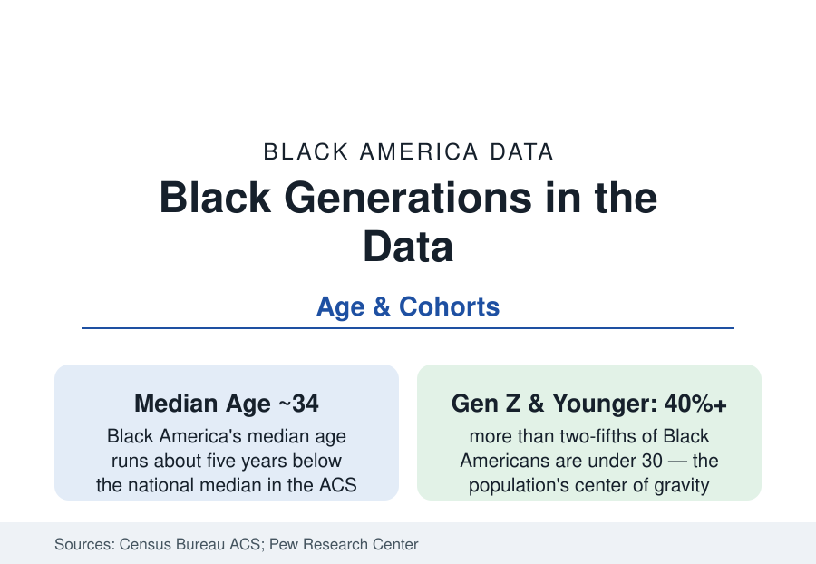

Black Census
Black America by Generation: From the Silent Generation to Gen Alpha
Black America's median age is about 34 — younger than the nation's — and each generation's data describe a different country. The generational profile.

Black America's median age is about 34 — roughly five years younger than the nation's — which means the population's statistical center sits in a different life stage than the country's: more schoolchildren and young workers per retiree, family formation still ahead of the median household, the future tense built into the age pyramid. And each Black generation in the data inhabits a measurably different America. This article profiles the cohorts.
The Elders: Silent Generation and the Oldest Boomers
The oldest living Black Americans — the Silent Generation (born 1928–45) and the first Boomers — are the civil-rights generation in the demographic sense: born into the segregated South's data (the rural profile's world), schooled in the systems the Brown era dismantled, migrated or stayed in the proportions the suburbanization file records. Their current data are the seniors profile's: Social Security-dependent, church-anchored, homeowners in the paid-off subdivisions, the population's institutional memory held in the lowest internet-adoption and highest civic-participation brackets simultaneously. Their numbers are shrinking on schedule — the cohort that integrated America's institutions is now in its eighties and nineties — and the obituary data of the movement's generation mark the passing in the public record.
Boomers and Gen X: The Integration Cohorts
The later Boomers and Generation X (born from the mid-1950s through 1980) are the first cohorts educated entirely after formal desegregation — the affirmative-action and post-industrial generations whose data hold the era's paradoxes in person: the highest educational attainment of their time and the manufacturing collapse in the same decades, the crack era's mortality shadow across their young-adult years (the cohort effects visible in their health data), and the great suburbanization executed by their mortgages. They are now the population's establishment: the Black elected officials, pastors, principals, and executives of the leadership files are disproportionately this cohort, and their retirement — on the 401(k)-era balances of the retirement profile — is the next decade's senior file. Generation X's distinctive data note: it is the smallest cohort and the 'sandwich' peak — simultaneously raising children and absorbing the grandparents-caregiving file.
Millennials: The Largest Living Generation
Black millennials (born 1981–96) are, as in the nation, among the largest cohorts — the population's current parents, homebuyers-of-record-age, and workforce center. Their data carry their era's signatures: the highest educational attainment in Black history to their point (the women of this cohort especially — the degree file's steepest segment), the recession-delayed household formation (later marriage, later first purchase in the census series), the student-debt peak (the loan profile is substantially their biography), and the digital-native civic style (the movement era of the 2010s was demographically theirs). Economically they are the first Black generation whose median outcomes the researchers compare against their parents' with genuine ambiguity — education up, wealth flat, homeownership recovering from the foreclosure era's theft of their first buying years.
Gen Z and Alpha: The Plurality Generation
The youngest cohorts are the most diverse Black population ever counted: the highest foreign-born and second-generation shares (the immigration files' children), the highest multiracial identification (the census's rising 'two or more races' counts are substantially this generation's self-description), the most urban-suburban distribution, and — in the survey data — the most distinct cultural and institutional profile (the religion file's loosening, the media file's platform natives). Their education data are being written now (the pandemic cohorts' NAEP files are their first national report card), their labor data are the youth employment profile's, and their projected trajectory — the Census Bureau's projections have the Black population growing through mid-century on their fertility and immigration — makes them the reference's forward tense. The data infrastructure's task with this generation is nominal but real: the categories ('Black alone' versus 'in combination') will describe a shrinking share of how they describe themselves, and the statisticians' bridging methods are the file's technical frontier.
Reading the Generational Data
A population with a median age of 34 experiences its statistics as biography at unusual speed: the schools file and the workforce file are the same people's adjacent decades. Black America's generations measure the country's changes in a single family's dinner table — the great-grandmother born into Jim Crow's countryside, the grandmother who integrated a school, the mother who integrated a suburb, the daughter integrating a feed — and the census, counting them together, calls it 47 million people. It is also four Americas, stacked.
More in Black Census
The Black Population of the United States: Size, Definitions, and Distribution
The Black population of the United States totals 52.8 million — 15.4 percent of the nation. How the Census Bureau defines and counts the population, and where it lives.
Black Median Household Income in the United States
Black median household income stands at $56,490 in the Census Bureau's annual income report — how the figure is measured, how it compares, and what drives it.
The Black Poverty Rate: Levels, Children, and the Long Trend
The official Black poverty rate is 17.1 percent — against 11.1 percent nationally and 7.7 percent for non-Hispanic White Americans. How poverty is measured and what the data show.
Source: U.S. Census Bureau, American Community Survey age data; Pew Research Center generational research; Census Bureau population projections.